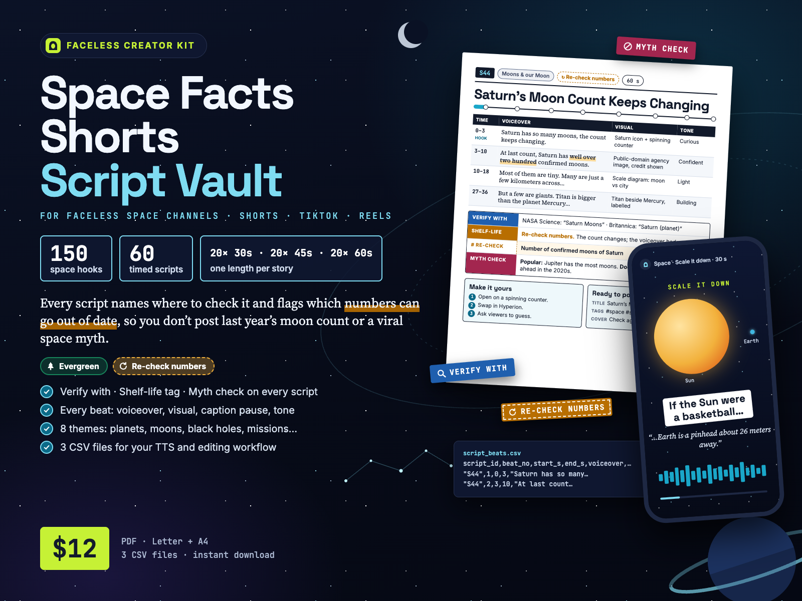
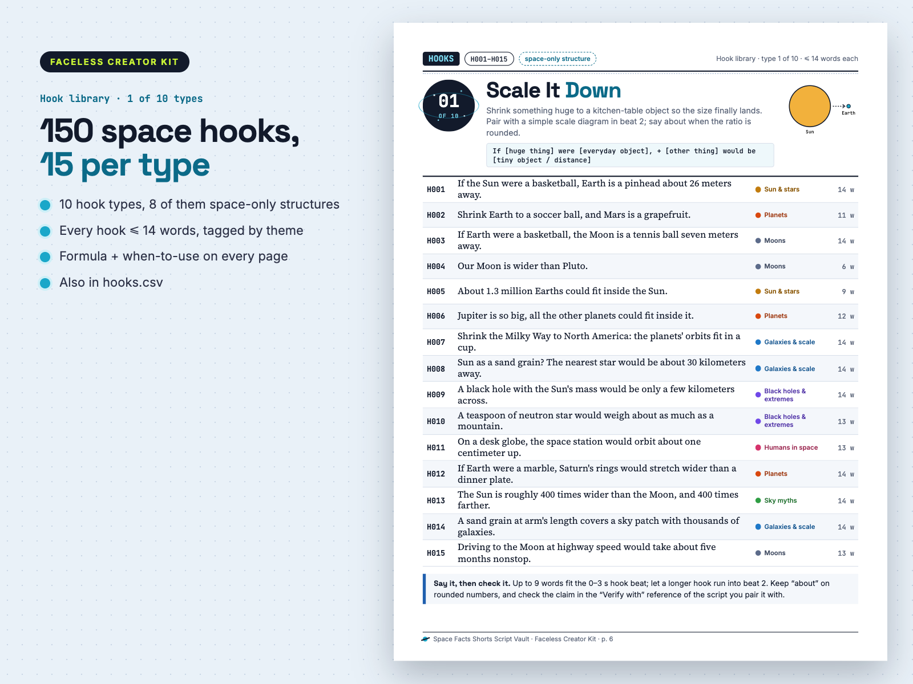
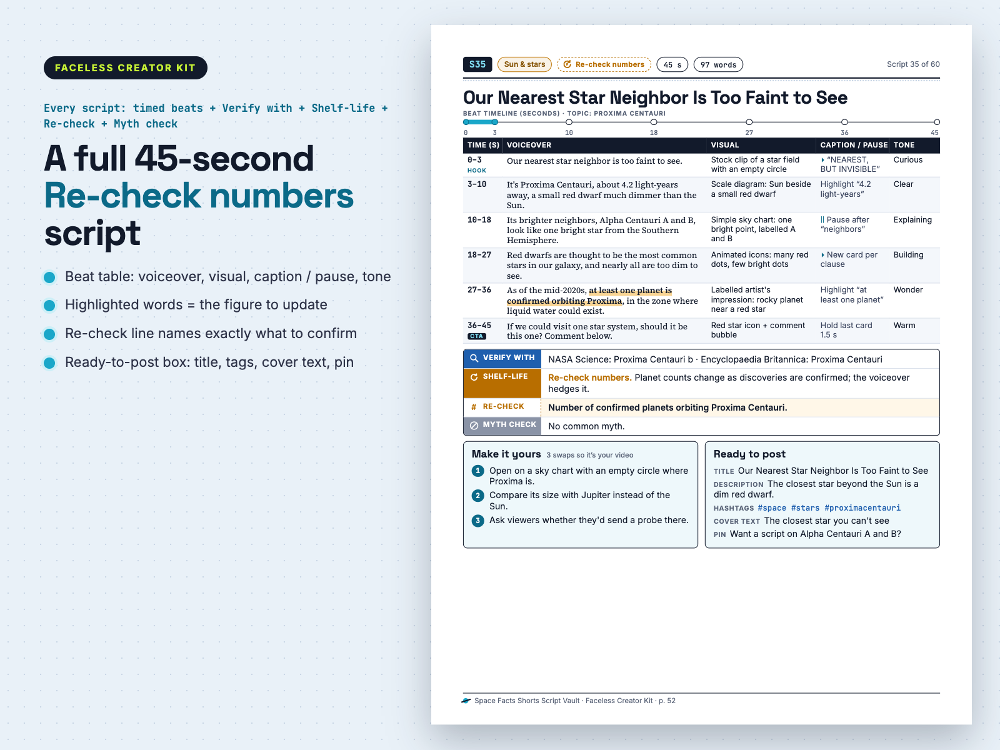
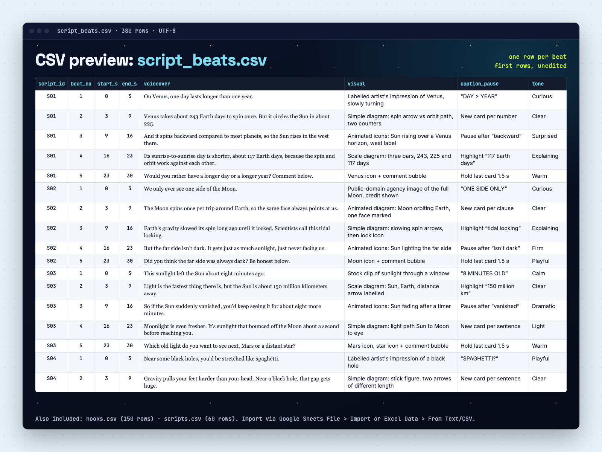
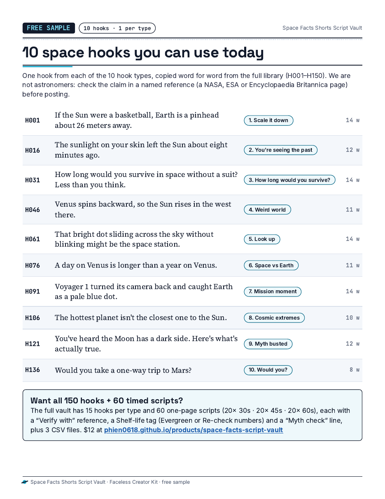

150 space hooks + 60 timed Shorts scripts. Every script names where to check it and flags which numbers can go out of date, so you don't post last year's moon count or a viral space myth.
A space-and-astronomy-only script library for faceless Shorts, Reels and TikTok: 60 finished scripts timed beat by beat (20 × 30 s · 20 × 45 s · 20 × 60 s), each with a “Verify with” reference, a Shelf-life tag and a Myth check line. 80-page PDF (US Letter + A4) + 3 CSV files. From Faceless Creator Kit, the creator-tools imprint of Hustle Studio.

$12.00 USD, $12 one-time, instant download (about $0.20 per script)
Buy now: $12 See 6 real pages first🔒 Secure checkout. Payment is handled by Waffo Pancake, our merchant of record, which processes the payment and the sales tax and accepts common debit and credit cards. Waffo sends you the receipt; we never see your card details. Right after payment you go straight to the download page.
↩️ 14-day refund, no questions asked. Email chenphien@gmail.com within 14 days of purchase and we refund you in full through Waffo Pancake (see Terms).
✅ Satisfaction guarantee: facts that don't match their reference get fixed or refunded. If a script states a fact that doesn't match the reference named on its own “Verify with” line, send us the script ID. We check it, and if the script is wrong we put a corrected version on the same download page, free for every buyer. If you'd rather have your money back, you get a full refund.
✉️ Real support. One email address, answered by the people who made the vault, within 2 business days.
🆕 New shop, honest about it. This vault is new, so it has no reviews yet, and we won't invent any. Instead: try the free 10-hook sample (no email, no signup), read a complete 30-second and 60-second script below word for word, look at real PDF pages, and see all 60 script titles before you pay.
We are not astronomers, and no outside expert has reviewed the scripts. Here is what we did instead, so you can judge it yourself:
Please still check each claim against its reference before you post.
Images are real PDF pages and a real view of the CSV. The 30-second and 60-second scripts and the contents list below are copied word for word from the paid files.




Pages 5 and 6 (a complete 30-second and a complete 60-second script) and the full contents list follow as text, so you can read every word.
Vertical screen recording of the real files.
S01Planets of the Solar SystemEvergreen30 s73 words
| Time (s) | Voiceover | Visual | Caption / pause | Tone |
|---|---|---|---|---|
| 0–3 (hook) | On Venus, one day lasts longer than one year. | Labelled artist's impression of Venus, slowly turning | “DAY > YEAR” | Curious |
| 3–9 | Venus takes about 243 Earth days to spin once. But it circles the Sun in about 225. | Simple diagram: spin arrow vs orbit path, two counters | New card per number | Clear |
| 9–16 | And it spins backward compared to most planets, so the Sun rises in the west there. | Animated icons: Sun rising over a Venus horizon, west label | Pause after “backward” | Surprised |
| 16–23 | Its sunrise-to-sunrise day is shorter, about 117 Earth days, because the spin and orbit work against each other. | Scale diagram: three bars, 243, 225 and 117 days | Highlight “117 Earth days” | Explaining |
| 23–30 (CTA) | Would you rather have a longer day or a longer year? Comment below. | Venus icon + comment bubble | Hold last card 1.5 s | Warm |
Verify with: NASA Science: Venus Facts · Encyclopaedia Britannica: Venus (planet)
Shelf-life: Evergreen
Myth check: No common myth.
Make it yours: 1) Open on a calendar flipping while Venus barely turns. 2) Compare with Mercury, where a solar day lasts two of its years. 3) Ask viewers to guess the day length before the reveal.
Ready to post: Title: A Day on Venus Is Longer Than Its Year · Description: Venus spins so slowly that its day outlasts its year. · Hashtags: #space #venus #planets · Cover text: Day longer than a year? · Pin: Want the Mercury version next?
S44Moons & our MoonRe-check numbers60 s125 words
| Time (s) | Voiceover | Visual | Caption / pause | Tone |
|---|---|---|---|---|
| 0–3 (hook) | Saturn has so many moons, the count keeps changing. | Saturn icon beside a fast-spinning number counter | “THE COUNT KEEPS CHANGING” | Curious |
| 3–10 | At last count, Saturn has well over two hundred confirmed moons. That's more than any other planet we know. | Public-domain agency image of Saturn, credit shown | Pause 0.5 s after “moons” | Confident |
| 10–18 | Most of them are tiny. Many are just a few kilometers across, more like captured rocks than round worlds. | Scale diagram: tiny moon next to a city outline | New card per sentence | Light |
| 18–27 | Astronomers find them by stacking many telescope images until faint dots moving with Saturn stand out. | Animated icons: stacked frames, one dot circled | Highlight “faint dots” | Explaining |
| 27–36 | But a few are giants. Titan is bigger than the planet Mercury and has a thick, hazy atmosphere. | Scale diagram: Titan beside Mercury, both labelled | Pause after “giants” | Building |
| 36–45 | And little Enceladus sprays jets of water ice into space from cracks near its south pole. | Artist's impression of Enceladus jets, labelled | “WATER ICE JETS” | Wonder |
| 45–54 | So the next time someone quotes a moon count, check the date. The number keeps climbing. | Counter icon next to a calendar icon | Hold card 1 s | Wry |
| 54–60 (CTA) | Which moon would you visit first, Titan or Enceladus? Tell me below. | Titan and Enceladus icons + comment bubble | Hold last card 1.5 s | Warm, direct |
Verify with: NASA Science: Saturn Moons · Encyclopaedia Britannica: Saturn (planet), moons section
Shelf-life: Re-check numbers. Re-check: Number of confirmed moons of Saturn (and of Jupiter, if you compare them).
Myth check: Popular version: Jupiter has the most moons. Documented: Saturn moved ahead after batches of new discoveries in the 2020s; both counts can still change.
Make it yours: 1) Open on a counter spinning upward instead of Saturn itself. 2) Swap Enceladus for Hyperion and its sponge-like, cratered surface. 3) Change the CTA: ask viewers to guess today's count first.
Ready to post: Title: Saturn's Moon Count Keeps Changing · Description: Why Saturn's moon total is a moving target. · Hashtags: #space #saturn #astronomy · Cover text: How many moons? Check again. · Pin: Which space number should I re-check next?
H001, H016, H031, H046, H061, H076, H091, H106, H121, H136, copied word for word from the paid files. No email or signup. The page also lists exactly what the paid vault adds.
Open the free sample| File | Format | Pages / rows |
|---|---|---|
Space-Facts-Script-Vault_Letter.pdf | PDF, US Letter | 80 pages |
Space-Facts-Script-Vault_A4.pdf | PDF, A4 | 80 pages (same content) |
hooks.csv | CSV, UTF-8 | 150 rows (H001–H150): hook_id, hook_type, theme, hook_text, word_count |
scripts.csv | CSV, UTF-8 | 60 rows (S01–S60), one per script: shelf_life, recheck, full voiceover, verify_with, myth_check, 3 swaps, post fields, CTA |
script_beats.csv | CSV, UTF-8 | 380 rows, one per beat: start/end seconds, voiceover, visual, caption / pause, tone |
README.txt | Plain text | 1 file: file list, CSV import steps for Google Sheets and Excel, license summary, verify and re-check advice |
Space-Facts-Script-Vault.zip | ZIP | All 6 files above in one download |
Book order: cover, contents (every line is a link), How to use, Accuracy & platform notes, 10 hook pages (one hook type per page, 150 hooks), script index, 60 script pages, a 6-step script-to-video workflow, FAQ, license. The download page has a separate link for each of the 6 files and for the ZIP.
So you can judge the whole vault, not just the previews. Theme in brackets; ↻ = Re-check numbers.
S01 A Day on Venus Is Longer Than Its Year (Planets) · S02 Why We Only See One Side of the Moon (Moons) · S03 The Sunlight on Your Skin Is 8 Minutes Old (Sun & stars) · S04 Black Holes Can Turn You Into Spaghetti (Black holes) · S05 You Can See Another Galaxy Without a Telescope (Galaxies & scale) · S06 Voyager 1 Is Still Flying Away From Us ↻ (Missions) · S07 Astronauts Get Taller in Space (Humans in space) · S08 Summer Isn't About Being Closer to the Sun (Sky myths) · S09 The Tallest Volcano We Know Is on Mars (Planets) · S10 The Moon Is Slowly Drifting Away (Moons) · S11 The Sun Isn't Yellow. It's White. (Sun & stars) · S12 A Teaspoon of Neutron Star Weighs a Mountain (Black holes) · S13 Hubble Stared at Nothing and Found Galaxies (Galaxies & scale) · S14 Apollo 11's Footprints Are Probably Still There (Missions) · S15 Why Astronauts Eat Tortillas Instead of Bread (Humans in space) · S16 Shooting Stars Aren't Stars (Sky myths) · S17 Uranus Spins on Its Side (Planets) · S18 Europa May Hide a Huge Ocean Under Ice ↻ (Moons) · S19 Betelgeuse Isn't About to Explode Tomorrow (Sun & stars) · S20 Black Holes Aren't Cosmic Vacuum Cleaners (Black holes)
S21 A Light-Year Is a Distance, Not a Time (Galaxies & scale) · S22 The Mars Rover That Sang Happy Birthday ↻ (Missions) · S23 How Astronauts Sleep With No Up or Down (Humans in space) · S24 Why the Sky Is Blue (It's Not the Ocean) (Sky myths) · S25 Saturn Is Less Dense Than Water (Planets) · S26 Earth's Shadow Doesn't Cause Moon Phases (Moons) · S27 Sunlight's Energy May Be Older Than Civilization (Sun & stars) · S28 The First Image of a Black Hole (Black holes) · S29 Earth Is Speeding Around the Galaxy (Galaxies & scale) · S30 Hubble Launched Blurry and Got Glasses ↻ (Missions) · S31 A Spacesuit Is a Tiny Spaceship You Wear (Humans in space) · S32 Solar Eclipses Rely on a Cosmic Coincidence (Sky myths) · S33 Sunsets on Mars Are Blue (Planets) · S34 The Giant Rising Moon Is an Illusion (Moons) · S35 Our Nearest Star Neighbor Is Too Faint to See ↻ (Sun & stars) · S36 Magnetars: Dead Stars That Are Monster Magnets (Black holes) · S37 We Can See Farther Than 13.8 Billion Light-Years (Galaxies & scale) · S38 New Horizons Found a Giant Heart on Pluto (Missions) · S39 Why Astronauts Work Out Two Hours a Day (Humans in space) · S40 The North Star Isn't the Brightest Star (Sky myths)
S41 Jupiter's Great Red Spot Is Shrinking ↻ (Planets) · S42 What Really Happens to a Body in Space (Humans in space) · S43 The Sun Has an Eleven-Year Cycle (Sun & stars) · S44 Saturn's Moon Count Keeps Changing ↻ (Moons) · S45 The Space Signal Nicknamed Little Green Men (Black holes) · S46 We've Found Thousands of Planets Beyond the Sun ↻ (Galaxies & scale) · S47 Cassini's Final Dive Into Saturn (Missions) · S48 Space Is Closer Than You Think ↻ (Humans in space) · S49 You Can't See the Great Wall From the Moon (Sky myths) · S50 The Closest Planet to the Sun Isn't the Hottest (Planets) · S51 Io: The Moon Covered in Volcanoes (Moons) · S52 Why the Sun's Atmosphere Is Hotter Than Its Surface ↻ (Sun & stars) · S53 The Giant Black Hole at the Heart of Our Galaxy (Black holes) · S54 The Oldest Light in the Universe Is All Around You (Galaxies & scale) · S55 People Have Lived in Orbit Nonstop Since 2000 ↻ (Missions) · S56 The Longest Single Trip to Space: About 437 Days ↻ (Humans in space) · S57 Why Stars Twinkle but Planets Shine Steady (Sky myths) · S58 Neptune Was Found With Math (Planets) · S59 Our Moon May Have Formed From a Giant Collision (Moons) · S60 Auroras Happen at Both Ends of the Earth (Sky myths)
Space is an evergreen faceless niche with two traps. Commenters jump on viral myths, and some numbers change: moon counts, exoplanet totals, which spacecraft are still flying. This vault is built around both.
You get 60 original scripts across 8 themes. They run from planets, moons and black holes to missions, humans in space and everyday sky myths. Each script fits on one page. Its beat table runs from a 0–3 s hook to a final comment question, and every row says what to say, what to show, where to pause and how to sound. The read-speed rule is 2.5 words per second, so a 30 s script has 55–75 words, a 45 s script 85–112 and a 60 s script 115–150.
Under each beat table are the source notes. Verify with names where to check the claim. The Shelf-life tag says whether the script is Evergreen or contains a figure you should re-check on the day you post. A Myth check line gives the popular version next to the documented one. Then come 3 “Make it yours” swaps, which help keep your video original, and a “Ready to post” box with a title, a one-line description, 3 hashtags, cover text and a comment to pin.
The hook library holds 150 hooks, 15 per type, one type per page. Each page includes a formula and a note on when to use that type. All text also ships as 3 CSV files (hooks, scripts, and one row per beat) for Google Sheets, Excel or an automated TTS pipeline.
Visual cues name types of visuals you can legally make or get: public-domain agency images with the credit shown, labelled artist's impressions, simple scale diagrams, animated icons and licensed stock clips. They never point to film or TV footage.
Honesty limit: the scripts are written from widely documented astronomy, and our build process checks them for internal consistency. We are not astronomers, and no outside expert reviewed the scripts. Check each claim against the named reference before posting.
Which themes are covered?
8 themes: Planets of the Solar System; Moons & our Moon; Sun & stars; Black holes & extreme objects; Galaxies & the scale of the universe; Missions & exploration history; Humans in space (body, food, sleep, suits); Sky myths & everyday astronomy. Each has at least 7 scripts.
How many hooks are there?
150 hooks: 10 hook types × 15 hooks each (H001–H150). 8 of the 10 types are space-only structures (Scale it down to Cosmic extremes); Myth busted and Would you? complete the set.
What do the Shelf-life tags mean?
Evergreen means physics and long-settled facts that won't change. Re-check numbers means the script contains a count, record or mission status that can change. The figure is hedged in the voiceover and named on the script's “Re-check” line, so confirm it before posting.
Numbers go out of date. Will you update the files?
We don't promise new volumes or scheduled updates, and we won't pretend otherwise. What we do promise: corrections are free. If a script doesn't match its named reference, we fix it and the corrected files appear on the same download page for every buyer (bookmark it). And you don't have to depend on us: the 12 scripts with changeable figures are tagged Re-check numbers and their “Re-check:” line tells you exactly which number to confirm on the day you post.
Can I post my edited versions on a monetized YouTube channel? (license)
Yes. You can use any hook or script, as written or edited, in your own videos and posts, for personal or commercial use, including your own monetized YouTube, TikTok, Instagram or Facebook channels. One purchase covers one creator, or one channel team working on the same channels. You can't resell, share or redistribute the pack, the PDFs or the CSVs, or publish the scripts or hooks as a script product. The full license is on the last page of the PDF.
Are the facts guaranteed?
No. They come from widely documented astronomy, but we are not astronomers and no outside expert reviewed them. Check each claim against the named “Verify with” reference before posting. If a script doesn't match its reference, tell us: we correct it for every buyer or refund you, your choice.
Can I see it before buying?
Yes: the free sample has 10 hooks word for word, and this page shows a full 30-second script (S01), a full 45-second page (S35), a full 60-second script (S44), a hook page and all 60 titles.
What is NOT covered?
Conspiracy content (fake Moon landing, flat Earth, “NASA is hiding…”), except where a Myth check debunks it; astrology or horoscopes; UFO or alien-sighting claims; doomsday or “asteroid will hit on [date]” predictions; live news or upcoming launch dates; rocket or astronaut career advice; analysis of real living people (astronauts or company founders) as subjects; video clips or images (visual cues only); non-English text.
Why not just ask ChatGPT for space scripts?
You can, but free AI writers can repeat popular space myths or out-of-date counts with full confidence, and you'd have to fact-check and time every output yourself. Here each script is already timed beat by beat, names where to verify it, says whether it contains a number to re-check and flags the common myth.
Can I add my own hooks?
Yes. hooks.csv is a plain spreadsheet you can extend with your own rows. There is no generator.
Does it batch-generate a week of scripts?
No. It is a library of 60 finished scripts, not a generator or an app. 60 scripts = 2 months at 1 per day, or 3 weeks at 3 per day.
Does the same story come in 30, 45 and 60 s versions?
No. Each story is written at one length only: 20 at 30 s, 20 at 45 s and 20 at 60 s. The longest script is 60 s.
Is this affiliated with NASA or any space agency?
No. Faceless Creator Kit is not affiliated with NASA, ESA, JPL or any space agency. Agency pages are named only as places to check a claim.
How do refunds and support work?
Email chenphien@gmail.com; we reply within 2 business days. 14-day refund, no questions asked. Checkout runs through Waffo Pancake, our merchant of record. Right after payment you are sent to a download page on this site with a link for each file and the ZIP.
$12.00 USD, one-time
Buy now: $12🔒 Secure checkout by Waffo Pancake (merchant of record: it processes the payment and tax), common debit and credit cards accepted, instant download after payment. 14-day full refund, no questions asked.
Faceless Creator Kit / Hustle Studio is independent and not affiliated with NASA, ESA, JPL, any space agency or any video platform.